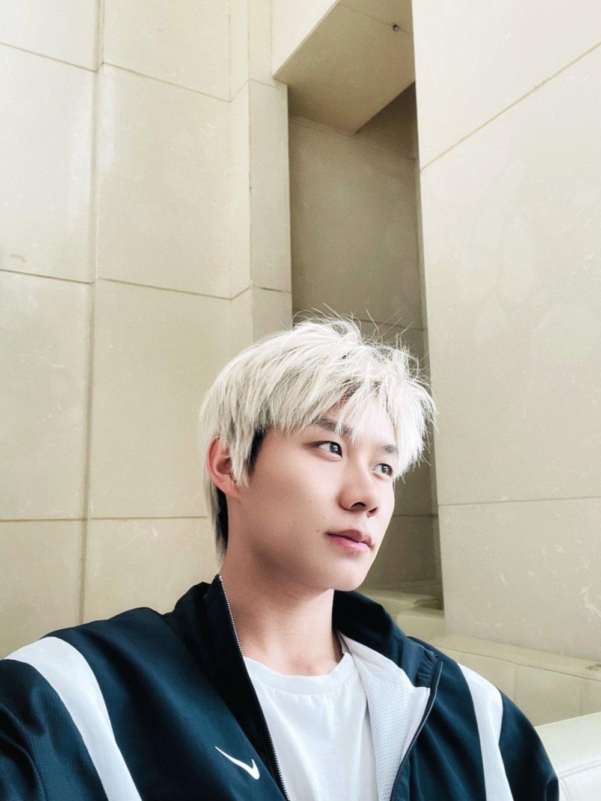
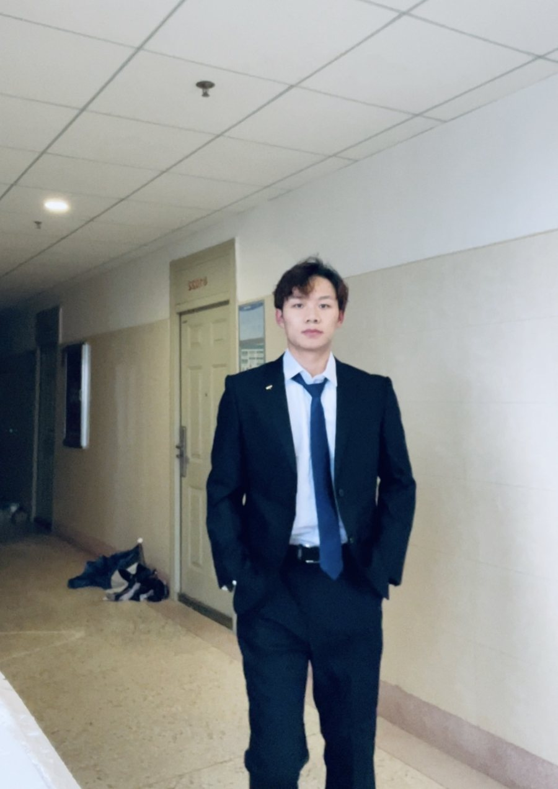
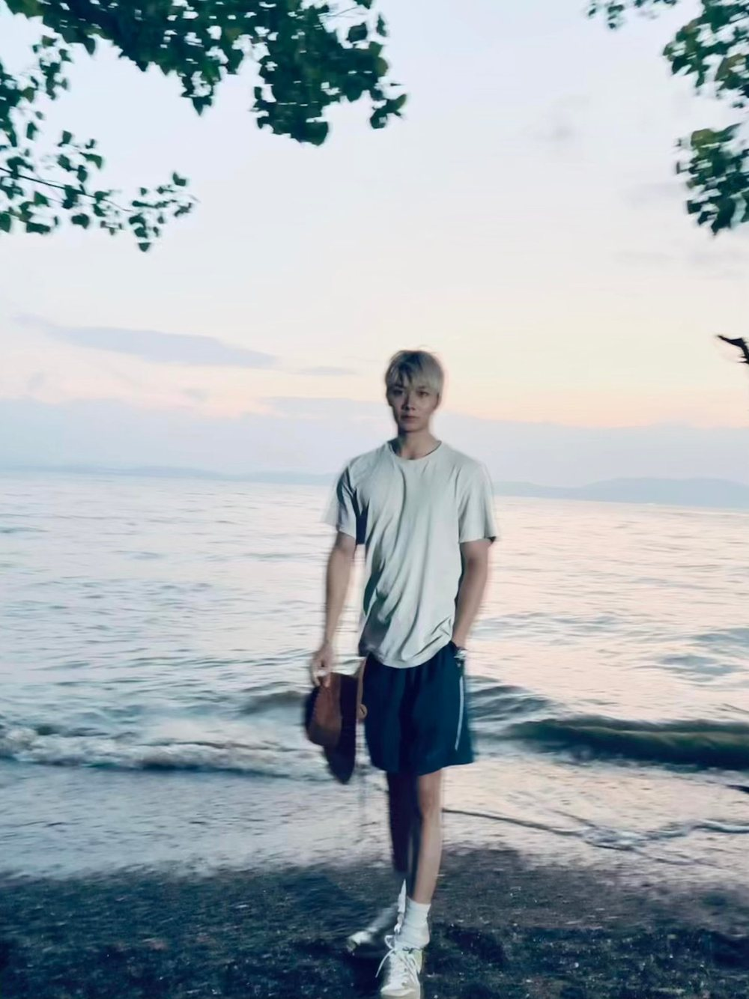
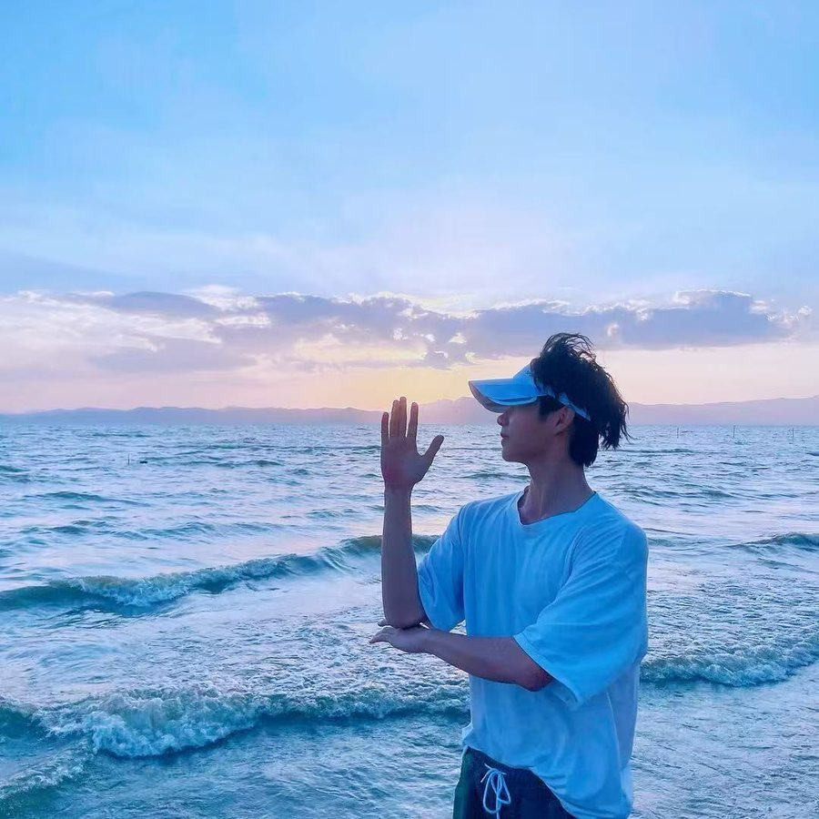
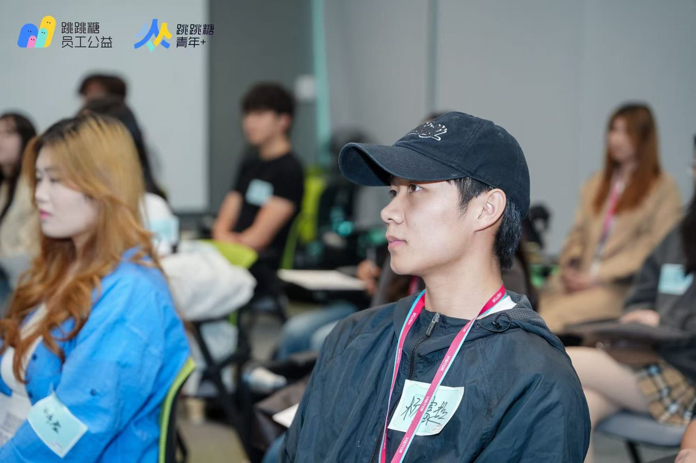
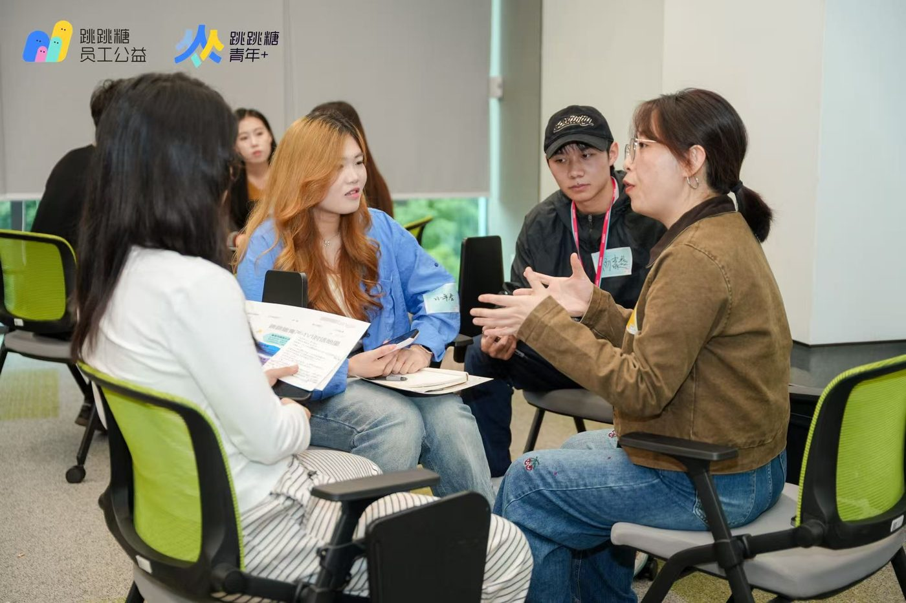
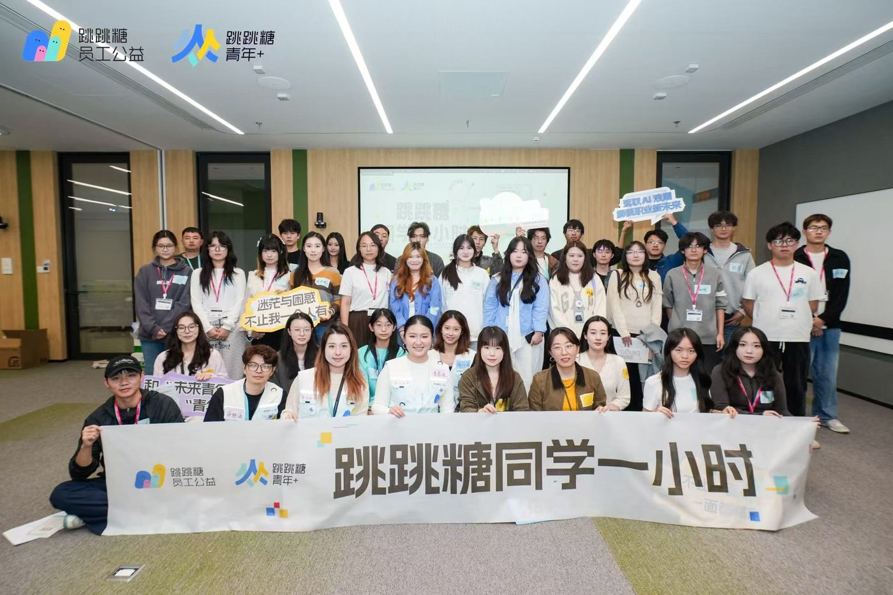

01
护理学本科
云南中医药大学四年，临床实习十个月。学会在压力下把流程做准，也学会怎么把专业讲成普通人听得懂的话。
不设限，去探索更大的世界杨富超
护理专业出发，保持好奇心，不断探索更多可能。
我来自云南中医药大学护理学专业，具备医学相关背景，同时对内容创作、销售和跨境电商保持长期热情。
在校长期担任班长与社团会长，习惯把一件事从头推到尾：定目标、拆步骤、盯结果、复盘，再来一次。
我希望用所学和实践经验，在更广阔的领域持续成长——用内容连接更多人，用行动创造更多价值。
几张生活照。拍素材的习惯，最早就是从这些日常里长出来的。

日常的一张。
保持记录，也保持被记录 —— 后来拍别人，靠的就是这份不别扭。
正装那天。
第一次认真对待镜头里的自己，也第一次觉得「要去做点正经事」。
黄昏时分的海。
光线最好的十几分钟，练构图、练耐心，也练怎么等一个瞬间。
给朋友拍素材的现场。
镜头对着别人的时候，才真正想明白构图和节奏是怎么回事。不设限
去探索更大的世界—— 杨富超
云南中医药大学四年，临床实习十个月。学会在压力下把流程做准，也学会怎么把专业讲成普通人听得懂的话。
把护理知识做成短视频，单条跑到 33 万播放、7000+ 赞。选题、脚本、拍摄、剪辑全流程一个人走完。
招生季做一线销售，四个月做到小组前 5%。真实体会到：成交靠的不是话术，是把对方的顾虑一条条拆开。
TikTok 起号一个月单条最高 500 万+；Ozon 五金类目从选品到交付，见过真实的订单现场。
参加字节跳动线下活动的现场记录。


